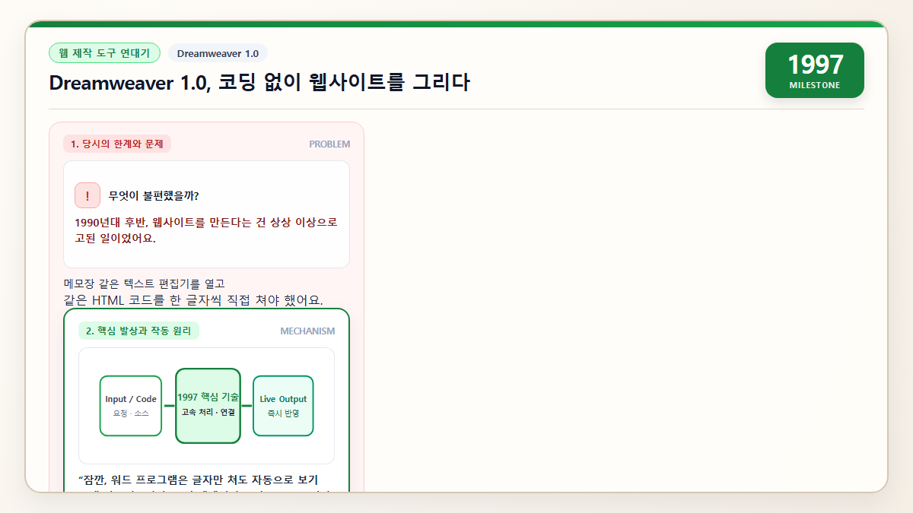

1997
Dreamweaver 1.0, drawing a website without writing code
“I just dragged it with my mouse and the code wrote itself!”
Thanks to Dreamweaver, designers could finally join in on making websites for the first time.

In the late 1990s, building a website was a punishing job.
You opened a plain text editor, typed every tag by hand — <table border="1" cellspacing="0" cellpadding="5"> — and tweaked one character to nudge an image, then refreshed the browser to see if it looked right.
Designers were locked out of the whole process. The unspoken rule was simple and unfair: "if you don't know code, you don't get to make websites."
An engineer at Macromedia stared at this gap and thought, "Wait. In a word processor you just type and the layout takes care of itself. So why can't a designer drag a photo onto a webpage and let the computer write the HTML behind it?"
That question became Dreamweaver in 1997. Designers dragged images and tables onto a canvas, and a panel on the right filled itself with valid HTML.
A designer at an ad agency tried it for the first time and beamed, "I just painted the page like a poster — and it actually works as a real website!" The developer next to her opened the code view, made a few tweaks, and for the first time the two of them were collaborating on the same screen instead of waiting on each other.
That "build a website without writing code" idea is the seed of an entire modern industry.
WordPress, Squarespace, Wix, Webflow, Notion sites, Substack — every tool that lets a small business owner publish a storefront, or a high schooler launch a portfolio in an afternoon, traces its lineage back to Dreamweaver.
The web stopped being gated by syntax and started being something anyone could touch.
Dreamweaver combined visual editing and a code window so non-developers could participate in building websites.
Later web integrated development environments (IDEs) began adding live previews and visual tools following this experience.